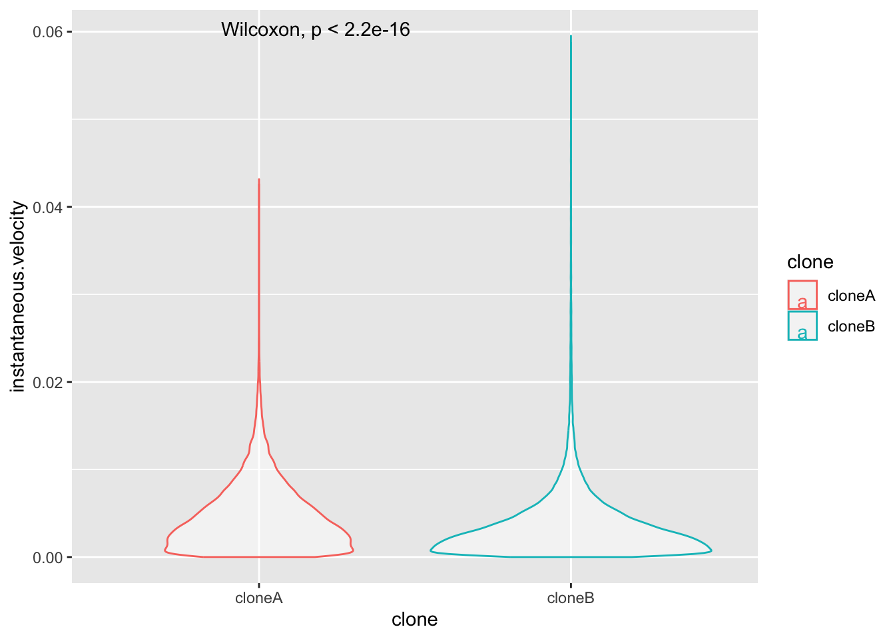
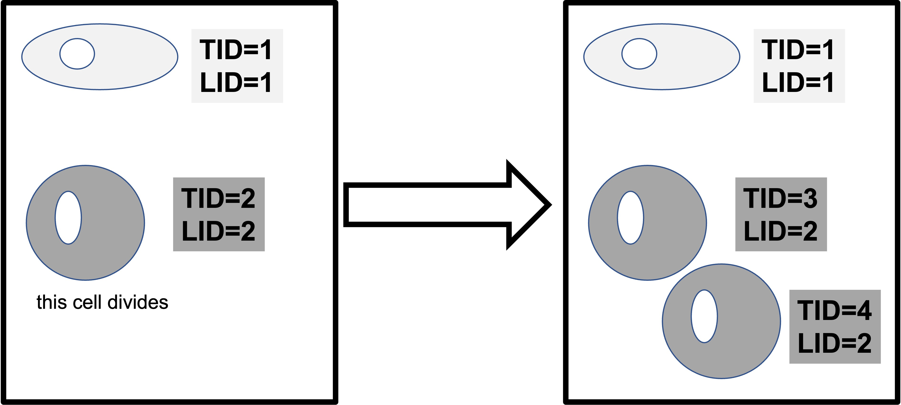
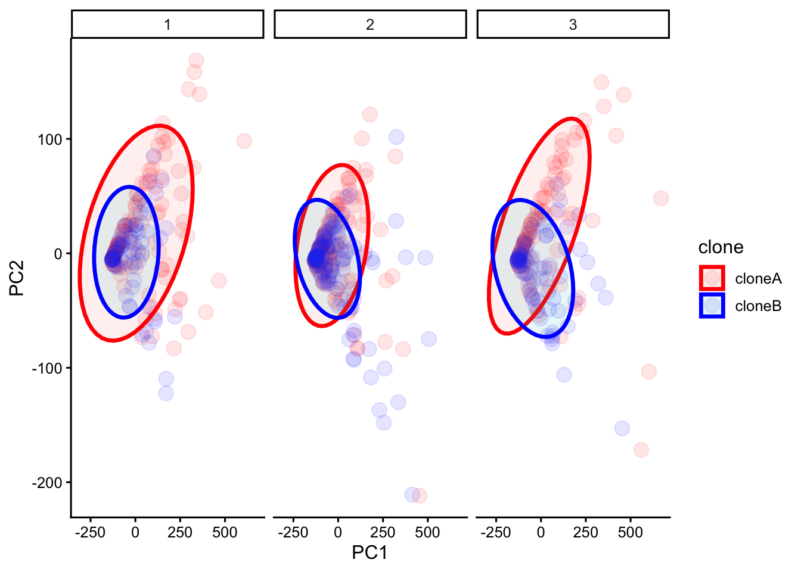

########################################################
#WORKSHOP 3: CELL MOVEMENT DATA
########################################################BIO00066I Workshop 3
Cell Biology Data Analysis Workshop 3
1 Learning objectives
Philosophy
Workshops are not a test. You may make a lot of mistakes - that is fine. It’s OK to need help. The staff are here to help you, so don’t be afraid to ask us anything :-)
How to cite packages
print(citation("package_name"), style = "text")
1.1 Technical skills
Today we will work with plotting movement data from the Livecyte microscope.
We will learn some new R plotting skills:
facet_wrapa method to plot one variable split up over different treatments (or chromosomes, or days, or replicates)- how to create a correlation data frame using the
correlatefunction. This allows us to explore many correlations between different metrics. Typically, these metrics are stored in the columns of our data frames.
1.2 Thinking like a data scientist
We encourage you to develop your data handling skills. By:
- keeping our script clear, simple, and well-annotated
- developing your own habits to keep your awareness on what data the data contains
Know your data!
To understand the biology captured in the data, you need to know what is in the data. At each step, be sure you know the rows, the columns and what they mean. Keep notes about this in your script.
2 Introduction
2.1 The biology
Today, we will continue our quest to understand mesenchymal stromal cells (MSCs). Remember, the two clones we are studying were both obtained from one person, and they have been transformed with telomerase to make them immortal (so they don’t age). Then, they have been cultured in a lab for years.
In workshop 2, we saw that these two clones were different shapes. This time, we examine how they move.
Sometimes, asking a good question is the most important step!
Why do these clones maintain different shapes after growing in the lab for so long? Why don’t they revert to being the same?
2.2 The data
In this workshop, we first examine cell movement data that was collected in an automated way by the Livecyte microscope. This shows something interesting, but it is not very reliable, because the Livecyte is not perfect at tracking individual cells.
People are better at tracking individual cells. So we then look at some manual tracking data. We will se such metrics as euclidean.distance (how far the cells have moved), mean.speed (how fast they go), and meandering.index (how much they meander and change their minds about where they are going!).
While we could guess how the cells differ from looking down the microscope, we can use our data science skills in two ways to enrich our perception, by:
- showing metrics with plots - this will enhance out intuition
- using statistical tests to test our intuitions
- the tests will determine which metrics (if any) are significantly different between the clones
This work transforms intuitions into evidence.
2.3 Research questions
- Do the two mesenchymal stromal cell clones move differently?
- What data set(s) are most reliable?
- What are the best parameters to distinguish the clones?
3 Exercises
3.1 Setting up
- Start up R Studio, and open your Project.
- Open the script your worked on in workshop 2
We will keep working on this script. We advise you to mark clearly where workshop 1, workshop 2 and workshop 3 are. Something like this will help:
First we will install the corrr package. Do do this, we do:
install.packages("corrr")
install.packages is like installing an app on your phone.
R obtains the package from the The Comprehensive R Archive Network (CRAN), which is like the ‘app store’ for R. You need an internet connection to use it, but once you have installed a package once, you never need to install it again. Unless you are using a new computer.
Note that in install.packages command we need to put quotes " around the library name (corrr in this case), whereas when we load a library with library(corrr).
Then clear the previous work, and load the libraries we need:
#clear previous data
rm(list=ls())
#load the tidyverse
library(tidyverse)
#load the corr library: this is for examining correlations between many metrics
library(corrr)
#we need this to make pretty plots with the 'ggarrange' package
library(ggpubr)3.2 Automated Livecyte cell movment data
Now read in the data from the file all-cell-data-FFT.filtered.2024-02-22.tsv. This contains some cell movment data.
# Read the automated Livecyte data
cells <-read_tsv(url("https://djeffares.github.io/BIO66I/all-cell-data-FFT.filtered.2024-02-22.tsv"),
col_types = cols(
clone = col_factor(),
replicate = col_factor(),
tracking.id=col_factor(),
lineage.id=col_factor()
)
)Lets see what data we have:
names(cells)
Keep it simple
In data science, we can easily get confused. keep the data as simple as you can (but no simpler).
In the spirit of keeping it simple, let’s retain only the columns in this data frame that we need, using the select function. The cells data framt still have all the data, so it is not lost.
names(cells) [1] "clone" "replicate"
[3] "frame" "tracking.id"
[5] "lineage.id" "position.x"
[7] "position.y" "pixel.position.x"
[9] "pixel.position.y" "volume"
[11] "mean.thickness" "radius"
[13] "area" "sphericity"
[15] "length" "width"
[17] "orientation" "dry.mass"
[19] "displacement" "instantaneous.velocity"
[21] "instantaneous.velocity.x" "instantaneous.velocity.y"
[23] "track.length" "length.to.width" #select only the columns we need
cell.move.data <- select(cells,
clone,
replicate,
displacement,
track.length,
instantaneous.velocity
)
#check that we have
names(cell.move.data)[1] "clone" "replicate" "displacement"
[4] "track.length" "instantaneous.velocity"#get a simple summaru, using summary and also glimpse
summary(cell.move.data) clone replicate displacement track.length
cloneA:38825 1:30471 Min. : 0.00 Min. : 0.00
cloneB:62217 2:44617 1st Qu.: 3.98 1st Qu.: 11.23
3:25954 Median : 24.15 Median : 56.02
Mean : 47.78 Mean :102.69
3rd Qu.: 67.22 3rd Qu.:149.83
Max. :514.09 Max. :960.74
instantaneous.velocity
Min. :0.0000
1st Qu.:0.0014
Median :0.0030
Mean :0.0040
3rd Qu.:0.0054
Max. :0.0595
NA's :15314 glimpse(cell.move.data)Rows: 101,042
Columns: 5
$ clone <fct> cloneA, cloneA, cloneA, cloneA, cloneA, cloneA,…
$ replicate <fct> 1, 1, 1, 1, 1, 1, 1, 1, 1, 1, 1, 1, 1, 1, 1, 1,…
$ displacement <dbl> 0.000000, 1.617625, 2.247724, 4.052623, 0.00000…
$ track.length <dbl> 0.000000, 1.617625, 5.118308, 6.950720, 0.00000…
$ instantaneous.velocity <dbl> NA, 0.0011713431, 0.0025367271, 0.0013278343, N…Now save your working data:
#lets save our data
save.image("BIO00066I-workshop3-cell-movement-metrics.Rda")
#you can load this any time later with:
load("BIO00066I-workshop3-cell-movement-metrics.Rda")3.3 Making plots
let’s see how clone A and clone B move. First, we’ll plot the instantaneous.velocity:
#instantaneous.velocity - geom_violin
ggplot(cell.move.data,aes(x=clone,y=instantaneous.velocity,colour=clone))+
geom_violin(alpha=0.5)+
stat_compare_means()
This plot isn’t very revealing is it? That is because most of the instantaneous.velocity values are very low, and the data are certainly not normally distributed. Biological data is often like this. Plotting metrics on a log scale is often the solution. Log2 or log10 scales are commonly used.
Adjust this plot yourself
So that you plot y=log10(instantaneous.velocity). Does it look better?
Enhance the plot with facet_wrap
This time, show the repeats by adding a new line to the plot code:
facet_wrap(~replicate)+
What is facet_wrap?. Our first categorical value that we split up the data into was clone A and clone B. facet_wrap splits the data up again into a second categorical value, and plots each category. In this case our second category was ~replicate.
If these adjustments to the code worked, you will end up with a plot like this. What does this tell you about clone movement?.

Optional
Use your plot code to explore, displacement, track.length and/or instantaneous.velocity.
3.4 Manual tracking data
Sometimes, the automated measurements are not the best quality. In this case, we know that the Livecyte microscope is not very good at tracking cells, so the cell movement metrics are not as good as we would like.
So Amanda spent many hours manually tracking cells. These results were processed into manual tracking data. First, load the data and of course examine what you have.
#load the manual tracking data
track <-read_tsv(url("https://djeffares.github.io/BIO66I/A1-and-B2-tracking.data.2025-02-27.tsv"))
#check it out
glimpse(track)Rows: 201
Columns: 10
$ LID <dbl> 1, 1, 1, 1, 1, 1, 1, 1, 1, 1, 1, 2, 2, 2…
$ TID <dbl> 1, 2, 3, 4, 5, 7, 8, 9, 10, 11, 12, 1, 2…
$ track.duration <dbl> 230, 1587, 1702, 2484, 2484, 1725, 2484,…
$ track.length <dbl> 80.850, 633.822, 711.651, 963.285, 870.3…
$ meandering.index <dbl> 0.08401856, 0.20254946, 0.47929912, 0.13…
$ euclidean.distance <dbl> 6.79290, 128.38031, 341.09370, 128.90071…
$ mean.speed <dbl> 0.3515217, 0.3993837, 0.4181263, 0.38779…
$ track.present.at.start.or.end <lgl> TRUE, FALSE, FALSE, TRUE, TRUE, FALSE, T…
$ track.never.divides <lgl> FALSE, FALSE, FALSE, FALSE, FALSE, FALSE…
$ cell.line <chr> "A1", "A1", "A1", "A1", "A1", "A1", "A1"…names(track) [1] "LID" "TID"
[3] "track.duration" "track.length"
[5] "meandering.index" "euclidean.distance"
[7] "mean.speed" "track.present.at.start.or.end"
[9] "track.never.divides" "cell.line" In this data, TID is the Livecyte tracking ID, a unique number that the microscope gives to each ‘object’ it can identify. LID is the Livecyte lineage ID. This keeps track of the cell lineage (ie: the initial cells, and the subsequent daughter cells that are derived from it as it divides). When a cell divides, both ‘daughter cells’ keep the same lineage ID, but each is assigned a new unique tracking ID.
Different names, same metric!
Note that different analysis software can use different terminologies to define their metrics. How confusing! In our case instantaneous.velocity from the cells data frame is the same as mean.speed in the tracking data. Both of these metrics are a measure of distance traveled/time.

3.5 Plotting manual tracking data
Let’s start by looking at the speed that each cell moves at during the experiment. This is recorded as mean.speed in this data set (the same as the instantenous.velocity in the cells data set). We can compare the clones (cell.line) like so:
#compare mean.speed between cell lines
ggplot(track, aes(x=cell.line,y=mean.speed))+
geom_boxplot()+
stat_compare_means()Warning: Removed 1 row containing non-finite outside the scale range
(`stat_boxplot()`).Warning: Removed 1 row containing non-finite outside the scale range
(`stat_compare_means()`).
Improve the plot
Try these things to improve this plot:
- use
geom_violininstead ofgeom_boxplot - adding
theme_classic - making the x-axis and y-axis look better with
xlab("something")andylab("something") - giving the plot a title with
ggtitle("top title", subtitle ="sub text")
After the workshop, we advise you to plot some other movement metrics from the tracking data.
3.6 Correlations abound!
With biological data (and data from many other sources), different measurements of the same set of ‘things’ are often correlated. For example, human height and weight are strongly correlated. So it is with cells.
We could examine each correlation one by one, like so:
#examine whether track.length and mean.speed are correlated
cor.test(track$track.length,track$mean.speed,method="spearman")
Spearman's rank correlation rho
data: track$track.length and track$mean.speed
S = 701096, p-value = 1.92e-13
alternative hypothesis: true rho is not equal to 0
sample estimates:
rho
0.4741649
A Non parametric warning
Here we use the non parametric test method="spearman" to calculate correlations, because we know from looking at the data that the track.length and probably mean.speed are not normally distributed. In a Spearman rank correlation, rho is the correlation coefficient (sometimes rho is written using the Greek symbol \(\rho\)).
But since there are 11 cell movment metrics, this would quickly become boring. And (just as importantly) the data would be a challenge to understand.
Fortunately, there is an easier way. First we use the correlate function to calculate all pairwise correlations. We save the correlation coefficients in the track.correlations data frame.
#calculate all pairwise correlations
track.correlations <-
track |>
correlate(method="spearman")Non-numeric variables removed from input: `track.present.at.start.or.end`, `track.never.divides`, and `cell.line`
Correlation computed with
• Method: 'spearman'
• Missing treated using: 'pairwise.complete.obs'#see what we have
head(track.correlations)# A tibble: 6 × 8
term LID TID track.duration track.length meandering.index
<chr> <dbl> <dbl> <dbl> <dbl> <dbl>
1 LID NA -0.148 0.0411 0.0346 0.0281
2 TID -0.148 NA -0.255 -0.268 0.221
3 track.duration 0.0411 -0.255 NA 0.840 -0.477
4 track.length 0.0346 -0.268 0.840 NA -0.345
5 meandering.index 0.0281 0.221 -0.477 -0.345 NA
6 euclidean.distan… 0.00902 -0.133 0.413 0.626 0.407
# ℹ 2 more variables: euclidean.distance <dbl>, mean.speed <dbl>Then we use pivot_longer ass we did in BIO00066I core workshop 1, to simplify the data format.

pivot_longer reshapes data. Notice that no data is lost. does.We will use pivot_longer this way:
#Adjust the name of the first column to "Variable1"
names(track.correlations)[1]="Variable1"
#simplify the data with pivot_longer
track.correlations.pivot <-
track.correlations |>
pivot_longer(-Variable1, names_to = "Variable2", values_to = "corr.coeff")
#examine what we have
head(track.correlations.pivot)# A tibble: 6 × 3
Variable1 Variable2 corr.coeff
<chr> <chr> <dbl>
1 LID LID NA
2 LID TID -0.148
3 LID track.duration 0.0411
4 LID track.length 0.0346
5 LID meandering.index 0.0281
6 LID euclidean.distance 0.00902Finally, we can show all the correlation coefficients in one plot. This gives us a unique and revealing sense of the data.
#plot data in the track.correlations.pivot table
#using geom_tile (for coloured boxes) and geom_text (to show the correlation coefficient values)
ggplot(track.correlations.pivot, aes(Variable1, Variable2)) +
geom_tile(aes(fill = corr.coeff)) +
geom_text(aes(label = round(corr.coeff, 1))) +
scale_fill_gradient(low = "white", high = "red")+
theme(axis.text.x = element_text(angle = 90, vjust = 0.5, hjust=1))Warning: Removed 7 rows containing missing values or values outside the scale range
(`geom_text()`).
3.6.1 Removing unneeded columns
OK, this is a useful plot. If you have got this far in the workshop, you are doing well!
But it is a bit cluttered. We could improve it by removing the TID and LID columns, because these are arbitrary numbers that don’t tell us anything about the biology.
Luckily, we don’t have to do all our analysis again. We can just remove these columns from the track.correlations.pivot data frame, before we make the plot. Here is how:
#pipe track.correlations.pivot data frame into filter
track.correlations.pivot |>
#filter out the TID and LID columns
filter(Variable1 != 'LID') |>
filter(Variable2 != 'LID') |>
filter(Variable1 != 'TID') |>
filter(Variable2 != 'TID') |>
#now we put the plotting code here
ggplot(aes(Variable1, Variable2)) +
geom_tile(aes(fill = corr.coeff)) +
geom_text(aes(label = round(corr.coeff, 1))) +
scale_fill_gradient(low = "white", high = "red")+
theme(axis.text.x = element_text(angle = 90, vjust = 0.5, hjust=1))Warning: Removed 5 rows containing missing values or values outside the scale range
(`geom_text()`).
#and voila! no more TID and LID columns3.6.2 Relate the maths to the biology
Positive correlations mean that when one metric is high, the other is high too. For example,
track.lengthandmean.speedare positively correlated. This makes sense, because a cell that has managed to travel a long way, is probably a fast mover.Negative correlations mean that when one metric is high, the other is low. For example,
track.lengthandmeandering.indexare negatively correlated. This makes sense, because a cell that meanders about (doesn’t go a in straight line) probably doesn’t have a long total track length?Correlations near zero mean that the two metrics are not strongly related.
Some points to note in this plot:
round(corr.coeff, 1)reduces the number of decimal places to 1.- try the plot with only:
geom_text(aes(label = corr.coeff))+(eek!) element_text(angle = 90, vjust = 0.5, hjust=1)changes the direction of the x axis labels- try omitting this line (again, eeek!)
- the
geom_tilemethod can be used to plot any pairwise interaction data
4 Reflection
It is critical to think about what our analysis shows aout the biology
Do this now.
- What do we know about the clones now?
- What do you know about how they move?
- Which metrics are correlated?
- What do correlations with negative \(\rho\) mean?
Today you have learned some data handling and plotting skills. These are:
- How to use
facet_wrapto split plots by a second category - How to plot values on a
log10()scale - How to ‘lengthen’ and simplify data using
pivot_longer - How to calculate and display numerous correlations in a grid with
geom_tile
5 The end
Download Code
You can download all the R code from this workshop as a single script file: workshop3.R
6 After the workshop
6.1 Consolodation exercises
6.1.1 Explore the data
Use the code from section 3.5 Plotting manual tracking data to plot other features of the manual tracking data. We advise you to plot: track.length, track.duration, meandering.index, and euclidean.distance.
Sometimes, we need to be careful with the data. For track.length, track.duration, we want to choose tracking data only for cells that we have observed it’s entire life - from when it is ‘born’ from the parental cell, to when it divides again.
Fortunately, this information in the data already. We do not see the entire ‘lifetime’ of any cell tracked object that have the value TRUE in in the column track.present.at.start.or.end, because we starting tracking them some time after they were born, or stopped tracking them before they divided again.
So we can filter out these lines by putting filter(track.present.at.start.or.end != TRUE) in our code. Let’s check if this makes any difference by comparing track.lengthwithout the filter, and then with the filter:
#track.length without the filter
no.filter.plot<- track |>
ggplot(aes(x=cell.line, y = track.length))+
geom_violin()+
stat_compare_means()+
ggtitle("no filter")
#track.length WITH the filter
filter.plot<- track |>
filter(track.present.at.start.or.end != TRUE) |>
ggplot(aes(x=cell.line, y = track.length))+
geom_violin()+
stat_compare_means()+
ggtitle("with filter")
#show plots side by side
ggarrange(no.filter.plot,filter.plot)
Did this make a difference?
- Did we get a different result after this ‘cleaning up’, with this large data set?
- Might we have a different result after this cleaning up, with a small data set?
6.1.1.1 Explore other metrics
Try using the code above to explore other metrics in the track data other than track.length. Options include track.duration, track.duration.total.time,euclidean.distanceandeuclidean.distance`.
6.1.2 Improve the correlation heat map
What if we wanted to show only the correlations where the absolute value of \(\rho\) was greater than 0.25? Try using the pipe operator |> to filter the track.correlations.pivot data before plotting, with:
#filter the data
track.correlations.pivot |>
filter(abs(corr.coeff) > 0.25) |>
#now we put the plotting code here
ggplot(aes(Variable1, Variable2)) +
geom_tile(aes(fill = corr.coeff)) +
geom_text(aes(label = round(corr.coeff, 1))) +
scale_fill_gradient(low = "white", high = "red")+
theme(axis.text.x = element_text(angle = 90, vjust = 0.5, hjust=1))6.2 Planning for your report
The RStudio project is worth 30% of this module. The submission of your RStudio project should:
- have a logical folder structure for your analysis
- contain a well-commented script
- be well-organised and follow good practice in use of spacing, indentation and variable naming.
The details are described in this document.
The aim of all this is to make the code and the data analysis clear and readable for someone else.
So spending just 10 minutes tidying your code now will make your future life easier. For example, look at your variable names, and make them clearer.
6.3 In case install.packages fails
If install.packages("corrr") fails, you can obtain the track.correlations data frame like this:
track.correlations <-read_tsv(url("https://djeffares.github.io/BIO66I/track.correlations.tsv"))